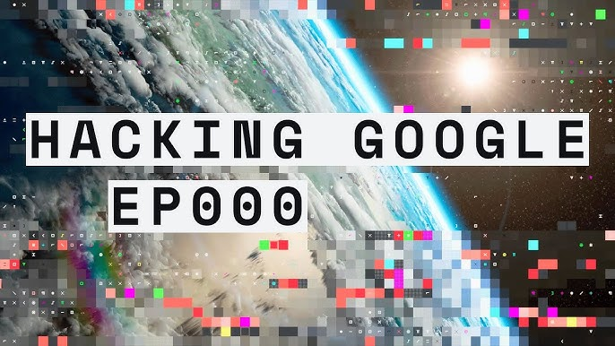

Nuñez Ledezma Diana Vanessa
Es un tipo de ataque cibernético que busca abrumar un servidor o red con tráfico masivo desde múltiples fuentes, haciéndolo inaccesible para usuarios legítimos. Los atacantes suelen usar redes de ordenadores infectados (botnets) para coordinar estos ataques.
Un ordenador que ha sido infectado por malware y controlado remotamente por un atacante sin que el propietario lo sepa. Estos dispositivos son usados comúnmente en ataques de DDoS( Webroot )( Radware ).
Persona que realiza actividades criminales utilizando herramientas digitales, como la creación de malware, robo de datos, o ataques de ransomware.

Es la persona que controla una botnet, una red de ordenadores infectados que se utilizan para realizar actividades maliciosas, como el envío de spam o ataques DDoS( Webroot ).

Una red de ordenadores infectados (zombies) controlados de forma remota para realizar ataques o actividades ilícitas, como el robo de información o el envío de correos basura( Webroot ).
Tipo de malware que cifra los datos de una víctima y exige un pago para restaurar el acceso a los mismos. Ejemplos famosos incluyen WannaCry y Petya.
Fue uno de los primeros gusanos informáticos que se propagó en Internet en 1988, afectando miles de ordenadores y causando interrupciones masivas.
Uso de ataques cibernéticos por estados o grupos organizados con el objetivo de causar daño a otros países o instituciones. Un ejemplo notorio es Stuxnet, un gusano que saboteó instalaciones nucleares en Irán.
Un ciberataque masivo y continuo detectado en 1998 que apuntó a agencias gubernamentales de EE.UU., exfiltrando grandes cantidades de información clasificada.
Fue un ataque cibernético dirigido a grandes empresas, incluidas Google y otras corporaciones, realizado supuestamente por hackers chinos en 2010. El ataque buscaba robar propiedad intelectual y datos confidenciales.
Este término no tiene un significado claramente conocido en ataques cibernéticos, pero puede estar relacionado con tácticas que "congelan" o inhabilitan sistemas para obligar a un rendimiento de información.
En 2017, la empresa de crédito Equifax sufrió un ciberataque que expuso los datos personales de 147 millones de personas, uno de los peores incidentes de violación de datos hasta la fecha.
En 2020, el sitio web Cam4 fue víctima de una filtración de datos masiva que expuso millones de registros de usuarios, incluidos datos personales y detalles de pago.